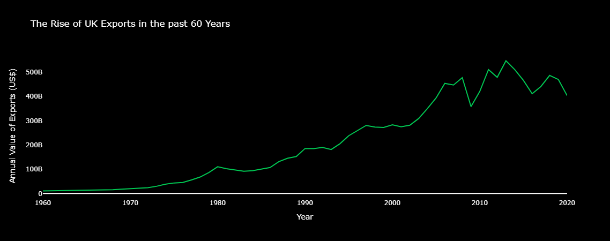

Proposition: Great Britain's Economy is on the rise!
FOR the Proposition

Design Decisions and Rationale:
- Line graph to show the passage of time and rise of exports in that time.
- Black background and green line as to imitate a stock graph to make the reader subconsciously understand the gain in exports.
- Graphed the raw data with no modifications other than filtering to one country (GB) and sorting by year as to graph the line graph.
- I rate every decision I do here a 2.0 as I'm not trying to decieve at all here, just graph the data.
AGAINST the Proposition
Design Decisions and Rationale:
- This time I manipulated the data and only used years after 2012, as they showed a downwards trend. I'm not inventing any new data, just picking an 'arbitrary' start point. I consider this -2 on the scale of deceptiveness, because I don't state in the graph title that there is more data that shows a different trend.
- I also cut the y-axis off and started it at 350 Billion as to make the decrease in exports seem more dramatic. I consider this a -1.5 level of deceptiveness, purely because it's easy to spot and I don't try and hide it.
- I also used emotionally charged language in the title of the plot as well as the caption as to get the reader emotional. I rate this as a -1 on the deceptiveness scale.
Final Reflection
I decided to graph the British economy here, because it is a subject I can relate to. My grandma lives in the UK, and is an avid Daily Mail reader (nasty publication). They frequently make up stories and graphs about how the country has gone to the dogs whenever there is a more left leaning government in charge, while making up stories about how great the country is when the conservative government is in charge. I wanted to pretend to be a 'journalist' (in quotes because they are not) for the daily mail, and see how easily I could make graphs that tell a story about the british economy.
I was surprised at how easy I found it. All I had to do was define a cut off for years, and my graphs told a completely different story. I didn't have to change the data at all, just decide how much of it I wanted to use, and that fact scared me. I could've decided to keep the y axis the same on my 'against' plot, but I decided to manipulate the scale because it is something a Daily Mail 'journalist' would've done as well. I wanted to feel grimy making my 'against' plot, and I feel suitably evil now that I have done so. I really like the emotionally charged language I used on my 'against' graph. I feel like it would invoke fear and shame in the hearts of a viewer of my graphs. I think in the case of how I tackled this project, it's easy to see what's ethical and unethical, but I could totally see the line blurring if there's more data and you have to decide what to keep for it. For example, if you have the data of the UK's economy since B.C., you would have to make a decision on where to cut off your data no matter what, as a flat line with a spike at the end would not make for an interesting plot. All in all, I really enjoyed this project and it opened my eyes to how people can push an argument using data, whether that argument is valid or not.